MTRefSeg: An Open-Source Benchmark and Baseline for Multi-temporal Referring Segmentation
2Northwestern Polytechnical University; Institute of Artificial Intelligence (TeleAI), China Telecom
3Fudan University
4Institute of Artificial Intelligence (TeleAI), China Telecom
+Equal Contribution(s) *Corresponding Author(s)
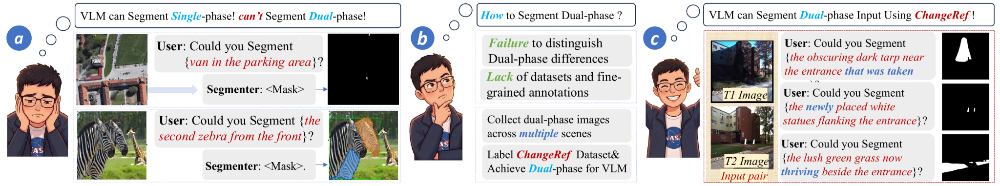
Abstract
Large Vision--Language Models have shown strong visual understanding and language-guided grounding abilities, yet their capacity for multi-temporal visual reasoning remains underexplored. We introduce Multi-temporal Referring Segmentation (MTRS), a task that segments language-described temporal changes from multi-temporal images. MTRS jointly requires temporal correspondence reasoning, language grounding, and pixel-level mask prediction. To support this task, we propose CRAFT-Agent, an automated data construction pipeline with human auditing, and build MTRefSeg-21K, the first MTRS benchmark with 21K high-quality bi-image--text--mask triplets across diverse scenes, viewpoints, and domains. Benchmarking 15 VLMs reveals that direct inference performs poorly, while task-specific fine-tuning remains limited, indicating that single-temporal vision-language pretraining is insufficient for MTRS. We further propose MTRefSeg-R1, a change-aware LVLM framework trained with a two-stage strategy: it first learns general temporal-change perception from approximately 20K vision-only bi-temporal samples, and is then fine-tuned on MTRefSeg-21K for fine-grained language-guided temporal localization.
New Task
MTRS unifies temporal change understanding, natural-language grounding, and pixel-level segmentation.
New Benchmark
MTRefSeg-21K contains fine-grained bi-image--text--mask triplets across normal-scene and remote-sensing domains.
Data Engine
CRAFT-Agent constructs annotations through grid-aware perception, mask refinement, expression beautification, and human auditing.
Strong Baseline
MTRefSeg-R1 learns change-sensitive visual representations from approximately 20K vision-only bi-temporal samples and then performs fine-grained language-conditioned localization.
Task Introduction: From Static Language Segmentation to Temporal Referring Segmentation
Our motivation starts from three representative language-guided segmentation paradigms: open-vocabulary segmentation, referring segmentation, and reasoning segmentation. These tasks have pushed segmentation from closed-set category prediction toward flexible text-conditioned perception, but they are still mainly formulated on single-time images. In real-world dynamic scenes, however, users often care about what has changed, where the change happens, and which changed region is specified by the instruction. This gap motivates our proposed Multi-temporal Referring Segmentation (MTRS) task.
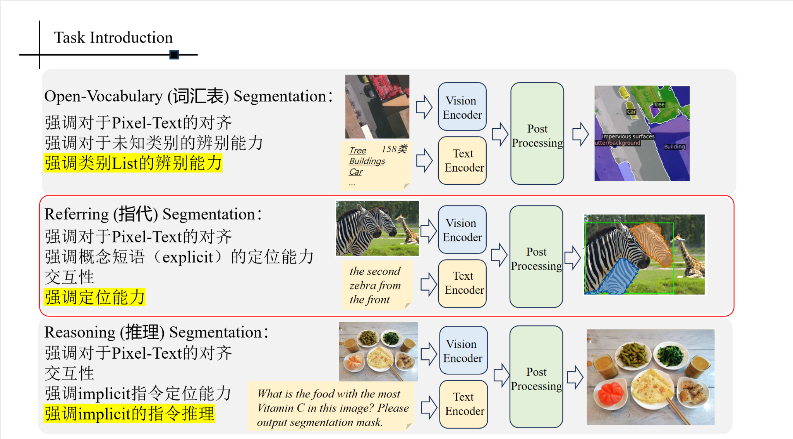
Open-Vocabulary Segmentation
Focuses on aligning pixels with category names or vocabulary lists. It is strong for recognizing unseen categories, but the target is usually category-level and does not require distinguishing a specific changed object across time.
Referring Segmentation
Localizes an explicitly described object or region in a single image, such as an object with certain attributes or spatial relations. It emphasizes precise grounding, but the evidence mainly comes from one visual observation.
Reasoning Segmentation
Segments a target implied by a high-level or implicit instruction. It requires semantic reasoning, but still usually reasons over a static scene rather than comparing earlier and later observations.
Dataset: MTRefSeg-21K
MTRefSeg-21K provides a unified benchmark for evaluating language-guided temporal change understanding across remote sensing, aerial-view, and normal-scene imagery, with overall, NS-domain, and RS-domain evaluation settings.
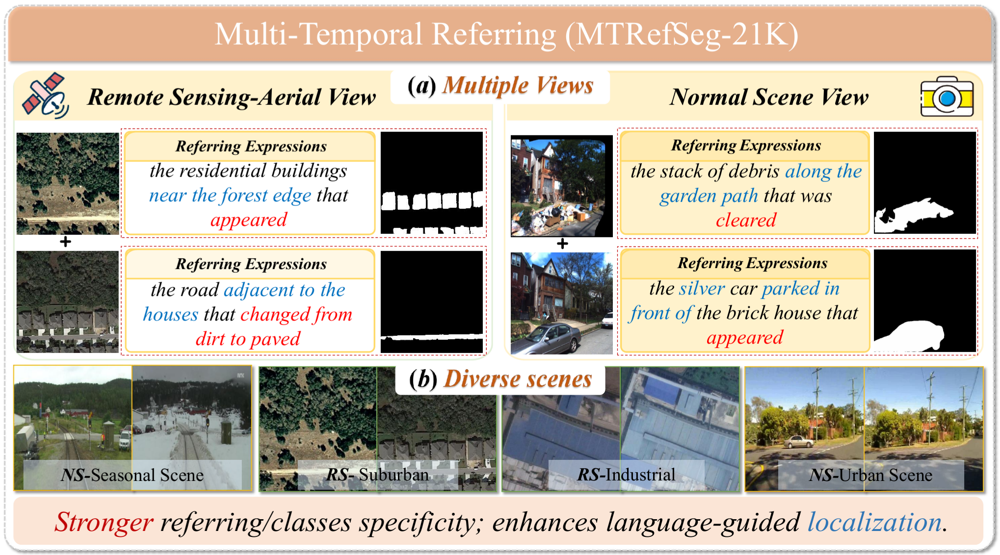
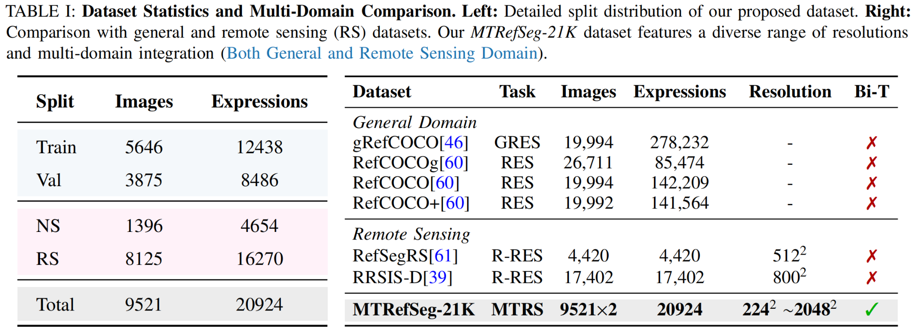
CRAFT-Agent Data Construction
CRAFT-Agent automatically produces high-quality bi-image--text--mask triplets through a three-stage workflow: grid-aware change perception, iterative mask correction, and natural referring-expression refinement.
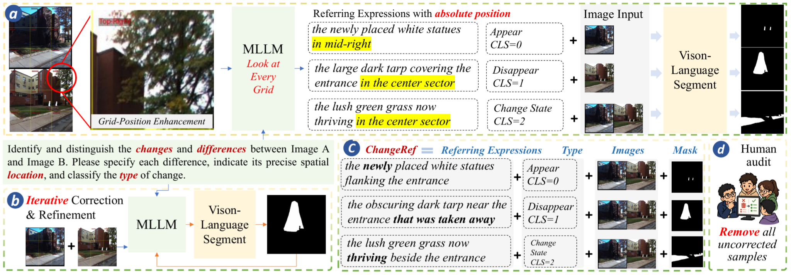
Method: MTRefSeg-R1
MTRefSeg-R1 is a change-aware LVLM for MTRS. It first learns general multi-temporal change perception from approximately 20K vision-only bi-temporal samples with binary change masks, then performs referring multi-temporal finetuning to segment only the language-specified changed region.
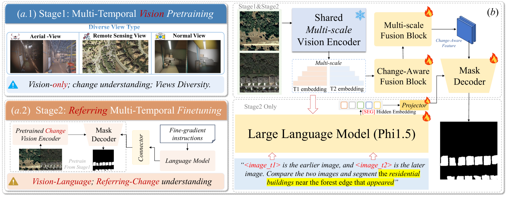
[SEG] token.
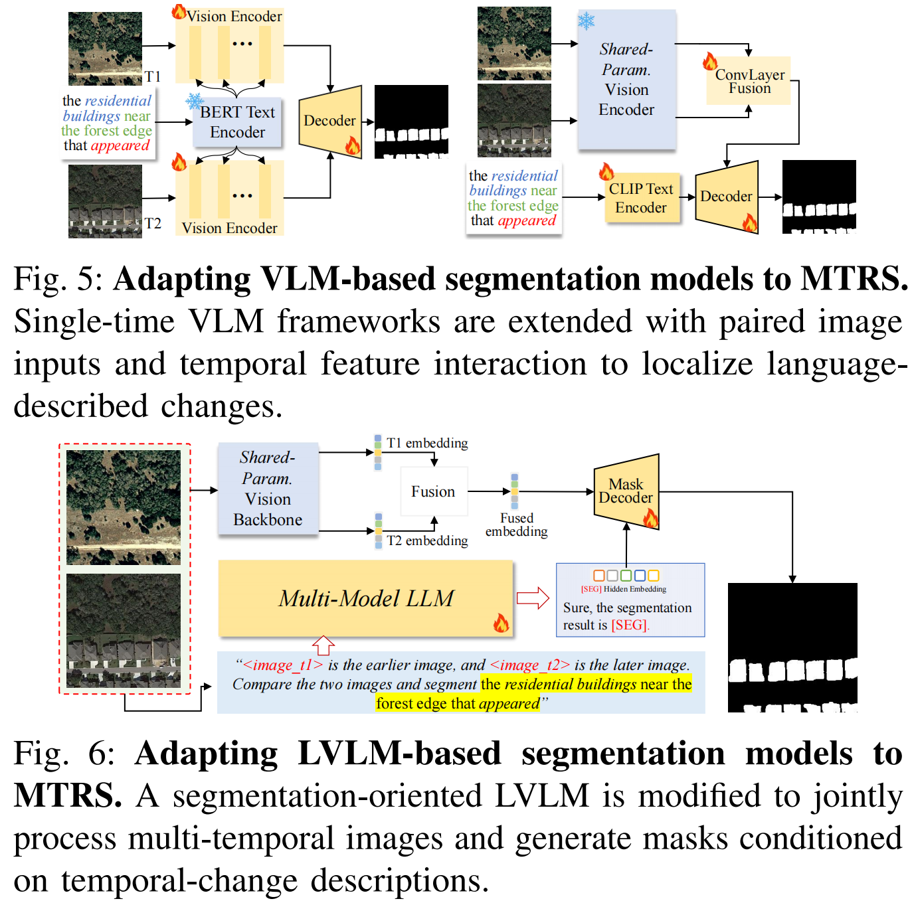
[SEG] token conditions mask prediction on the described temporal change.
Quantitative Benchmark Results
We benchmark specialist referring segmentation models and LVLM-based segmentation models under the Train→Val, NS→NS, and RS→RS settings. The results show that direct use of single-temporal LVLMs is insufficient for MTRS, while MTRefSeg-R1 provides a strong change-aware baseline after visual change pretraining and multimodal fine-tuning.
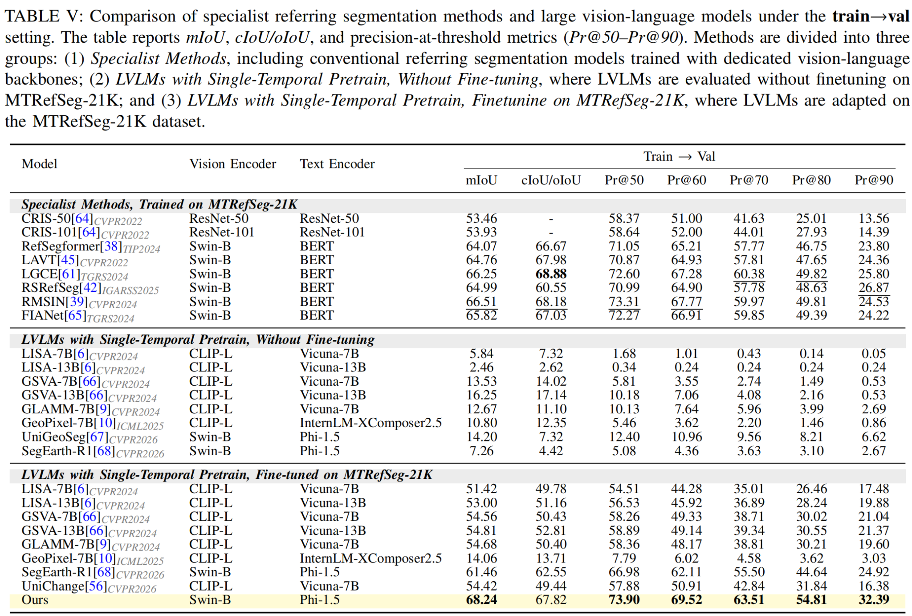
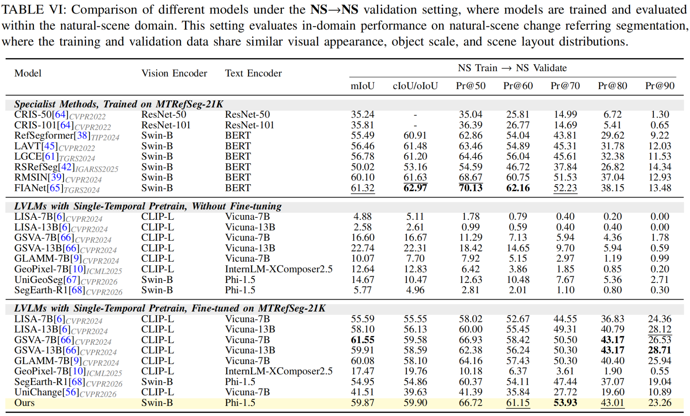
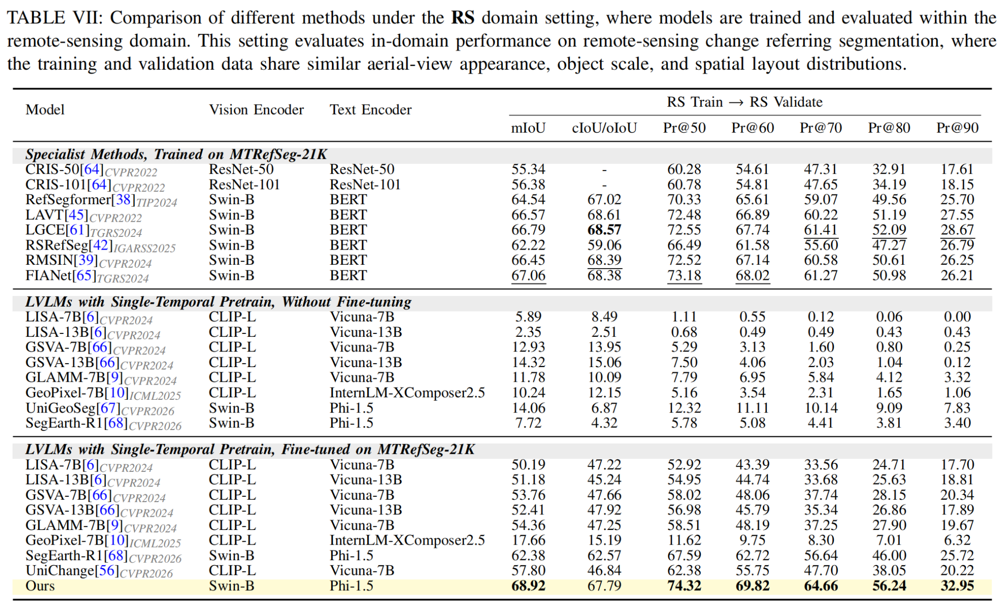
Qualitative Results
MTRefSeg evaluates both normal-scene and remote-sensing cases. Compared with existing LVLM baselines, MTRefSeg-R1 better localizes fine-grained language-described temporal changes.
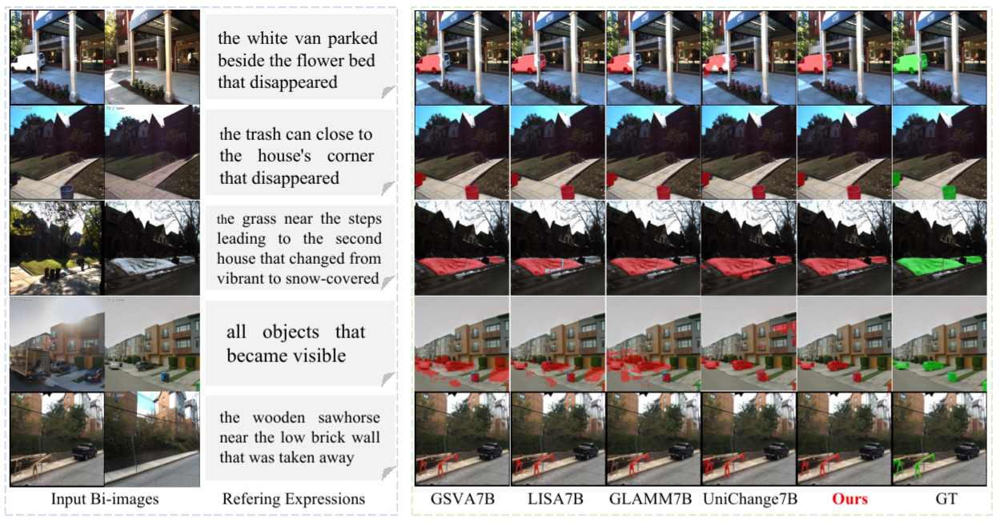
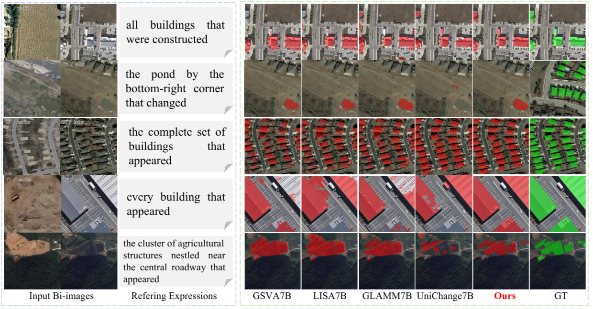
Language-Guided Temporal Attention
To better understand MTRefSeg-R1, we visualize decoder [SEG] attention maps and intermediate query masks. The attention progressively concentrates on the region described by the referring expression, and the query masks refine the target changed object before producing the final prediction.
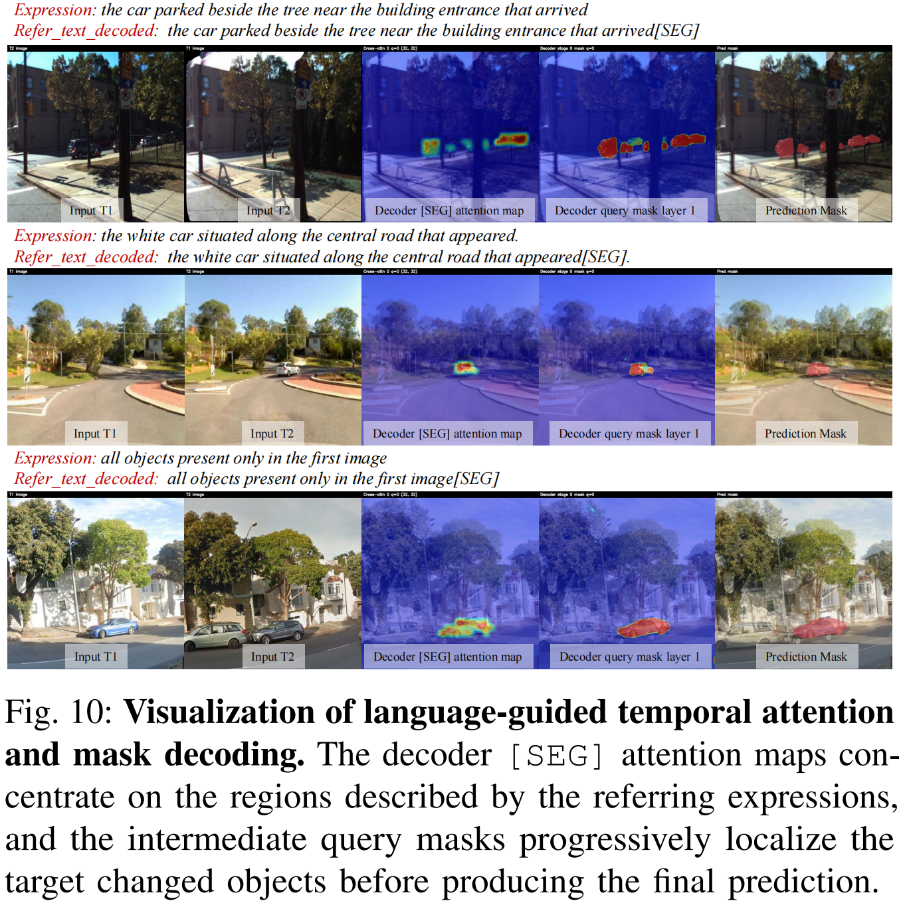
Resources
Cite This Work
@article{li2026mtrefseg,
title = {MTRefSeg: An Open-Source Benchmark and Baseline for Multi-temporal Referring Segmentation},
author = {Li, Bingyu and Zhang, Da and Wang, Feiyu and Huo, Tao and Wu, Du and Rong, Chenggang and Zhao, Zhiyuan and Gao, Junyu and Li, Xuelong},
journal = {arXiv preprint},
year = {2026}
}